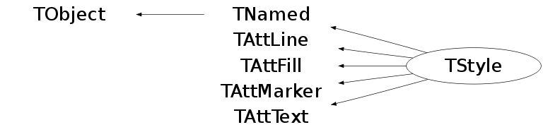
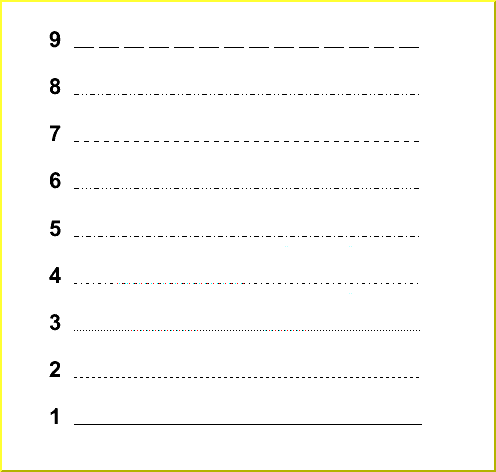

class TStyle: public TNamed, public TAttLine, public TAttFill, public TAttMarker, public TAttText
TStyle objects may be created to define special styles. By default ROOT creates a default style that can be accessed via the gStyle pointer. This class includes functions to set some of the following object attributes. - Canvas - Pad - Histogram axis - Lines - Fill areas - Text - Markers - Functions - Histogram Statistics and Titles
Function Members (Methods)
public:
protected:
| virtual void | TObject::DoError(int level, const char* location, const char* fmt, va_list va) const |
| void | TObject::MakeZombie() |
Data Members
public:
| enum EPaperSize { | kA4 | |
| kUSLetter | ||
| }; | ||
| enum TObject::EStatusBits { | kCanDelete | |
| kMustCleanup | ||
| kObjInCanvas | ||
| kIsReferenced | ||
| kHasUUID | ||
| kCannotPick | ||
| kNoContextMenu | ||
| kInvalidObject | ||
| }; | ||
| enum TObject::[unnamed] { | kIsOnHeap | |
| kNotDeleted | ||
| kZombie | ||
| kBitMask | ||
| kSingleKey | ||
| kOverwrite | ||
| kWriteDelete | ||
| }; |
protected:
| Color_t | TAttFill::fFillColor | fill area color |
| Style_t | TAttFill::fFillStyle | fill area style |
| Color_t | TAttLine::fLineColor | line color |
| Style_t | TAttLine::fLineStyle | line style |
| Width_t | TAttLine::fLineWidth | line width |
| Color_t | TAttMarker::fMarkerColor | Marker color index |
| Size_t | TAttMarker::fMarkerSize | Marker size |
| Style_t | TAttMarker::fMarkerStyle | Marker style |
| TString | TNamed::fName | object identifier |
| Short_t | TAttText::fTextAlign | Text alignment |
| Float_t | TAttText::fTextAngle | Text angle |
| Color_t | TAttText::fTextColor | Text color index |
| Font_t | TAttText::fTextFont | Text font number |
| Float_t | TAttText::fTextSize | Text size |
| TString | TNamed::fTitle | object title |
private:
| TAttText | fAttDate | canvas date attribute |
| Float_t | fBarOffset | offset of bar for graphs |
| Float_t | fBarWidth | width of bar for graphs |
| Int_t | fCanvasBorderMode | canvas border mode |
| Width_t | fCanvasBorderSize | canvas border size |
| Color_t | fCanvasColor | canvas color |
| Int_t | fCanvasDefH | default canvas height |
| Int_t | fCanvasDefW | default canvas width |
| Int_t | fCanvasDefX | default canvas top X position |
| Int_t | fCanvasDefY | default canvas top Y position |
| Bool_t | fCanvasPreferGL | if true, rendering in canvas is with GL |
| Int_t | fColorModelPS | PostScript color model: 0 = RGB, 1 = CMYK |
| Float_t | fDateX | X position of the date in the canvas (in NDC) |
| Float_t | fDateY | Y position of the date in the canvas (in NDC) |
| Int_t | fDrawBorder | flag to draw border(=1) or not (0) |
| Float_t | fEndErrorSize | Size of lines at the end of error bars |
| Float_t | fErrorX | per cent of bin width for errors along X |
| TString | fFitFormat | Printing format for fit parameters |
| Int_t | fFrameBorderMode | pad frame border mode |
| Width_t | fFrameBorderSize | pad frame border size |
| Color_t | fFrameFillColor | pad frame fill color |
| Style_t | fFrameFillStyle | pad frame fill style |
| Color_t | fFrameLineColor | pad frame line color |
| Style_t | fFrameLineStyle | pad frame line style |
| Width_t | fFrameLineWidth | pad frame line width |
| Color_t | fFuncColor | function color |
| Style_t | fFuncStyle | function style |
| Width_t | fFuncWidth | function line width |
| Color_t | fGridColor | grid line color (if 0 use axis line color) |
| Style_t | fGridStyle | grid line style |
| Width_t | fGridWidth | grid line width |
| Int_t | fHatchesLineWidth | hatches line width for hatch styles > 3100 |
| Double_t | fHatchesSpacing | hatches spacing for hatch styles > 3100 |
| TString | fHeaderPS | User defined additional Postscript header |
| Color_t | fHistFillColor | histogram fill color |
| Style_t | fHistFillStyle | histogram fill style |
| Color_t | fHistLineColor | histogram line color |
| Style_t | fHistLineStyle | histogram line style |
| Width_t | fHistLineWidth | histogram line width |
| Bool_t | fHistMinimumZero | true if default minimum is 0, false if minimum is automatic |
| Double_t | fHistTopMargin | margin between histogram's top and pad's top |
| Bool_t | fIsReading | !Set to FALSE when userclass::UseCurrentStyle is called by the style manager |
| Width_t | fLegendBorderSize | legend box border size |
| Color_t | fLegendFillColor | legend fill color |
| Style_t | fLegendFont | legend font style |
| Float_t | fLegoInnerR | Inner radius for cylindrical legos |
| Float_t | fLineScalePS | Line scale factor when drawing lines on Postscript |
| TString | fLineStyle[30] | String describing line style i (for postScript) |
| Int_t | fNumberContours | default number of contours for 2-d plots |
| Int_t | fOptDate | =1 if date option is selected |
| Int_t | fOptFile | =1 if option File is selected |
| Int_t | fOptFit | =1 if option Fit is selected |
| Int_t | fOptLogx | =1 if log scale in X |
| Int_t | fOptLogy | =1 if log scale in y |
| Int_t | fOptLogz | =1 if log scale in z |
| Int_t | fOptStat | =1 if option Stat is selected |
| Int_t | fOptTitle | =1 if option Title is selected |
| Int_t | fPadBorderMode | pad border mode |
| Width_t | fPadBorderSize | pad border size |
| Float_t | fPadBottomMargin | pad bottom margin |
| Color_t | fPadColor | pad color |
| Bool_t | fPadGridX | true to get the grid along X |
| Bool_t | fPadGridY | true to get the grid along Y |
| Float_t | fPadLeftMargin | pad left margin |
| Float_t | fPadRightMargin | pad right margin |
| Int_t | fPadTickX | =1 to set special pad ticks along X |
| Int_t | fPadTickY | =1 to set special pad ticks along Y |
| Float_t | fPadTopMargin | pad top margin |
| TString | fPaintTextFormat | Printing format for TH2::PaintText |
| Float_t | fPaperSizeX | PostScript paper size along X |
| Float_t | fPaperSizeY | PostScript paper size along Y |
| Float_t | fScreenFactor | Multiplication factor for canvas size and position |
| Int_t | fShowEditor | Show pad editor |
| Int_t | fShowEventStatus | Show event status panel |
| Int_t | fShowToolBar | Show toolbar |
| Width_t | fStatBorderSize | border size of Stats PaveLabel |
| Color_t | fStatColor | stat fill area color |
| Style_t | fStatFont | font style of Stats PaveLabel |
| Float_t | fStatFontSize | font size in pixels for fonts with precision type 3 |
| TString | fStatFormat | Printing format for stats |
| Float_t | fStatH | height of stat box |
| Style_t | fStatStyle | fill area style of Stats PaveLabel |
| Color_t | fStatTextColor | stat text color |
| Float_t | fStatW | width of stat box |
| Float_t | fStatX | X position of top right corner of stat box |
| Float_t | fStatY | Y position of top right corner of stat box |
| Bool_t | fStripDecimals | Strip decimals in axis labels |
| Double_t | fTimeOffset | Time offset to the beginning of an axis |
| Int_t | fTitleAlign | title box alignment |
| Width_t | fTitleBorderSize | border size of Title PavelLabel |
| Color_t | fTitleColor | title fill area color |
| Style_t | fTitleFont | font style of Title PaveLabel |
| Float_t | fTitleFontSize | font size in pixels for fonts with precision type 3 |
| Float_t | fTitleH | height of title box |
| TString | fTitlePS | User defined Postscript file title |
| Style_t | fTitleStyle | fill area style of title PaveLabel |
| Color_t | fTitleTextColor | title text color |
| Float_t | fTitleW | width of title box |
| Float_t | fTitleX | X position of top left corner of title box |
| Float_t | fTitleY | Y position of top left corner of title box |
| TAttAxis | fXaxis | X axis attributes |
| TAttAxis | fYaxis | Y axis attributes |
| TAttAxis | fZaxis | Z axis attributes |
Class Charts
{kind=link}
{kind=link}
{kind=link}
{kind=link}

Function documentation
TStyle(const char* name, const char* title)
Create a new TStyle. The following names are reserved to create special styles -Classic: the default style set in TStyle::Reset -Plain: a black&white oriented style -Bold: -Video; -Pub: -Modern: (see the definition of these styles below). Note a side-effect of calling gStyle->SetFillColor(0). This is nearly equivalent of selecting the "Plain" style. Many graphics attributes may be set via the TStyle, see in particular - TStyle::SetNdivisions - TStyle::SetAxisColor - TStyle::SetHeaderPS - TStyle::SetTitlePS - TStyle::SetLabelColor - TStyle::SetLabelFont - TStyle::SetLabelOffset - TStyle::SetLabelSize - TStyle::SetOptDate - TStyle::SetLineStyleString - TStyle::SetOptFit - TStyle::SetOptStat - TStyle::SetPaperSize - TStyle::SetTickLength - TStyle::SetTitleOffset - TStyle::SetTitleSize - TStyle::SetPalette - TStyle::SetTimeOffset - TStyle::SetStripDecimals The current style is pointed by gStyle. When calling myStyle->cd(), gStyle is set to myStyle. One can also use gROOT to change the current style, e.g. gROOT->SetStyle("Plain") will change the current style gStyle to the "Plain" style See also TROOT::ForceStyle and TROOT::UseCurrentStyle
Int_t DistancetoPrimitive(Int_t px, Int_t py)
Function used by the TStyle manager when drawing a canvas showing the current style.
const char * GetLineStyleString(Int_t i = 1) const
Return line style string (used by PostScript). See SetLineStyleString for more explanations
void SetColorModelPS(Int_t c = 0)
Define the color model used by TPostScript and TPDF (RGB or CMYK). CMY and CMYK models are subtractive color models unlike RGB which is additive. They are mainly used for printing purposes. CMY means Cyan Magenta Yellow. To convert RGB to CMY it is enough to do: C=1-R, M=1-G and Y=1-B. CMYK has one more component K (black). The conversion from RGB to CMYK is: Double_t Black = TMath::Min(TMath::Min(1-Red,1-Green),1-Blue); Double_t Cyan = (1-Red-Black)/(1-Black); Double_t Magenta = (1-Green-Black)/(1-Black); Double_t Yellow = (1-Blue-Black)/(1-Black); CMYK adds the black component which allows better quality for black printing. PostScript and PDF support the CMYK model. c = 0 means TPostScript and TPDF will use RGB color model (default) c = 1 means TPostScript and TPDF will use CMYK color model
void SetHistMinimumZero(Bool_t zero = kTRUE)
If the argument zero=kTRUE the minimum value for the Y axis of 1-d histograms is set to 0 if the minimum bin content is greater than 0 and TH1::SetMinimum has not been called. Otherwise the minimum is based on the minimum bin content.
void SetNdivisions(Int_t n = 510, Option_t* axis = "X")
Set the number of divisions to draw an axis.
ndiv : Number of divisions.
n = N1 + 100*N2 + 10000*N3
N1=number of primary divisions.
N2=number of secondary divisions.
N3=number of 3rd divisions.
e.g.:
nndi=0 --> no tick marks.
nndi=2 --> 2 divisions, one tick mark in the middle
of the axis.
axis specifies which axis ("x","y","z"), default = "x"
if axis="xyz" set all 3 axes
void SetAxisColor(Color_t color = 1, Option_t* axis = "X")
Set color to draw the axis line and tick marks. axis specifies which axis ("x","y","z"), default = "x" if axis="xyz" set all 3 axes
void SetEndErrorSize(Float_t np = 2)
Set the size (in pixels) of the small lines drawn at the end of the error bars (TH1 or TGraphErrors). The default value is 2 pixels. Set np=0 to remove these lines
void SetHeaderPS(const char* header)
Define a string to be inserted in the Postscript header
The string in header will be added to the Postscript file
immediatly following the %%Page line
For example, this string may contain special Postscript instructions like
200 200 translate
the following header string will print the string "my annotation" at the
bottom left corner of the page (outside the user area)
"gsave 100 -100 t 0 r 0 0 m /Helvetica-Bold findfont 56 sf 0 0 m ( my annotation ) show gr"
This information is used in TPostScript::Initialize
void SetIsReading(Bool_t reading = kTRUE)
Sets the fIsReading member to reading (default=kTRUE) fIsReading (used via gStyle->IsReading()) can be used in the functions myclass::UseCurrentStyle to read from the current style or write to the current style
void SetTitlePS(const char* pstitle)
Define a string to be used in the %%Title of the Postscript files. If this string is not defined, ROOT will use the canvas title.
void SetLabelColor(Color_t color = 1, Option_t* axis = "X")
Set axis labels color. axis specifies which axis ("x","y","z"), default = "x" if axis="xyz" set all 3 axes
void SetLabelFont(Style_t font = 62, Option_t* axis = "X")
Set font number used to draw axis labels.
font : Text font code = 10*fontnumber + precision
Font numbers must be between 1 and 14
precision = 1 fast hardware fonts (steps in the size)
precision = 2 scalable and rotatable hardware fonts
The default font number is 62.
axis specifies which axis ("x","y","z"), default = "x"
if axis="xyz" set all 3 axes
void SetLabelOffset(Float_t offset = 0.005, Option_t* axis = "X")
Set offset between axis and axis labels. The offset is expressed as a percent of the pad height. axis specifies which axis ("x","y","z"), default = "x" if axis="xyz" set all 3 axes
void SetLabelSize(Float_t size = 0.04, Option_t* axis = "X")
Set size of axis labels. The size is expressed as a percent of the pad height. axis specifies which axis ("x","y","z"), default = "x" if axis="xyz" set all 3 axes
void SetLineStyleString(Int_t i, const char* text)
Set line style string using the PostScript convention. A line is a suite of segments, each segment is described by the number of pixels. The initial and alternating elements (second, fourth, and so on) are the dashes, and the others spaces between dashes. Default fixed line styles are pre-defined as: linestyle 1 "[]" solid linestyle 2 "[12 12]" dashed linestyle 3 "[4 8]" dotted linestyle 4 "[12 16 4 16]" dash-dotted For example the following lines define the line style 5 to 9. gStyle->SetLineStyleString(5,"20 12 4 12"); gStyle->SetLineStyleString(6,"20 12 4 12 4 12 4 12"); gStyle->SetLineStyleString(7,"20 20"); gStyle->SetLineStyleString(8,"20 12 4 12 4 12"); gStyle->SetLineStyleString(9,"80 20");/*  */
Note:
- Up to 30 different styles may be defined.
- The opening and closing brackets may be omitted
- It is recommended to use 4 as the smallest segment length and multiple of
4 for other lengths.
- The line style 1 to 10 are predefined. 1 to 4 cannot be changed.
void SetNumberContours(Int_t number = 20)
Set the default number of contour levels when drawing 2-d plots.
void SetOptDate(Int_t datefl = 1)
If optdate is non null, the current date/time will be printed in the canvas.
The position of the date string can be controlled by:
optdate = 10*format + mode
mode = 1 (default) date is printed in the bottom/left corner.
mode = 2 date is printed in the bottom/right corner.
mode = 3 date is printed in the top/right corner.
format = 0 (default) date has the format like: "Wed Sep 25 17:10:35 2002"
format = 1 date has the format like: "2002-09-25"
format = 2 date has the format like: "2002-09-25 17:10:35"
examples:
optdate = 1 date like "Wed Sep 25 17:10:35 2002" in the bottom/left corner.
optdate = 13 date like "2002-09-25" in the top/right corner.
The date position can also be controlled by:
gStyle->SetDateX(x); x in NDC
gStyle->SetDateY(y); y in NDC
The date text attributes can be changed with:
gStyle->GetAttDate()->SetTextFont(font=62);
gStyle->GetAttDate()->SetTextSize(size=0.025);
gStyle->GetAttDate()->SetTextAngle(angle=0);
gStyle->GetAttDate()->SetTextAlign(align=11);
gStyle->GetAttDate()->SetTextColor(color=1);
The current date attributes can be obtained via:
gStyle->GetAttDate()->GetTextxxxx();
When the date option is active, a text object is created when the pad
paint its list of primitives. The text object is named "DATE".
The DATE attributes can also be edited interactively (position
and attributes) via the normal context menu.
void SetOptFit(Int_t fit = 1)
The type of information about fit parameters printed in the histogram
statistics box can be selected via the parameter mode.
The parameter mode can be = pcev (default = 0111)
p = 1; print Probability
c = 1; print Chisquare/Number of degress of freedom
e = 1; print errors (if e=1, v must be 1)
v = 1; print name/values of parameters
Example: gStyle->SetOptFit(1011);
print fit probability, parameter names/values and errors.
When "v"=1 is specified, only the non-fixed parameters are shown.
When "v"=2 all parameters are shown.
Note: gStyle->SetOptFit(1) means "default value", so it is equivalent to
gStyle->SetOptFit(111)
see also SetOptStat below.
void SetOptStat(Int_t stat = 1)
The type of information printed in the histogram statistics box
can be selected via the parameter mode.
The parameter mode can be = ksiourmen (default = 000001111)
k = 1; kurtosis printed
k = 2; kurtosis and kurtosis error printed
s = 1; skewness printed
s = 2; skewness and skewness error printed
i = 1; integral of bins printed
o = 1; number of overflows printed
u = 1; number of underflows printed
r = 1; rms printed
r = 2; rms and rms error printed
m = 1; mean value printed
m = 2; mean and mean error values printed
e = 1; number of entries printed
n = 1; name of histogram is printed
Example: gStyle->SetOptStat(11);
print only name of histogram and number of entries.
gStyle->SetOptStat(1101); displays the name of histogram, mean value and RMS.
WARNING: never call SetOptStat(000111); but SetOptStat(1111), 0001111 will
be taken as an octal number !!
WARNING: SetOptStat(1) is taken as SetOptStat(1111) (for back compatibility
with older versions. If you want to print only the name of the histogram
call SetOptStat(1000000001).
NOTE that in case of 2-D histograms, when selecting just underflow (10000)
or overflow (100000), the stats box will show all combinations
of underflow/overflows and not just one single number!
void SetOptStat(Option_t* stat)
The parameter mode can be any combination of kKsSiourRmMen
k : kurtosis printed
K : kurtosis and kurtosis error printed
s : skewness printed
S : skewness and skewness error printed
i : integral of bins printed
o : number of overflows printed
u : number of underflows printed
r : rms printed
R : rms and rms error printed
m : mean value printed
M : mean value mean error values printed
e : number of entries printed
n : name of histogram is printed
Example: gStyle->SetOptStat("ne");
print only name of histogram and number of entries.
gStyle->SetOptStat("n") print only the name of the histogram
gStyle->SetOptStat("nemr") is the default
void SetPaperSize(Float_t xsize = 20, Float_t ysize = 26)
void SetTickLength(Float_t length = 0.03, Option_t* axis = "X")
Set the tick marks length for an axis. axis specifies which axis ("x","y","z"), default = "x" if axis="xyz" set all 3 axes
void SetTitleColor(Color_t color = 1, Option_t* axis = "X")
if axis =="x" set the X axis title color if axis =="y" set the Y axis title color if axis =="z" set the Z axis title color any other value of axis will set the pad title color if axis="xyz" set all 3 axes
void SetTitleFont(Style_t font = 62, Option_t* axis = "X")
if axis =="x" set the X axis title font if axis =="y" set the Y axis title font if axis =="z" set the Z axis title font any other value of axis will set the pad title font if axis="xyz" set all 3 axes
void SetTitleOffset(Float_t offset = 1, Option_t* axis = "X")
Specify a parameter offset to control the distance between the axis and the axis title. offset = 1 means : use the default distance offset = 1.2 means: the distance will be 1.2*(default distance) offset = 0.8 means: the distance will be 0.8*(default distance) axis specifies which axis ("x","y","z"), default = "x" if axis="xyz" set all 3 axes
void SetTitleSize(Float_t size = 0.02, Option_t* axis = "X")
if axis =="x" set the X axis title size if axis =="y" set the Y axis title size if axis =="z" set the Z axis title size any other value of axis will set the pad title size if axis="xyz" set all 3 axes
void SetTimeOffset(Double_t toffset)
Change the time offset for time plotting. Times are expressed in seconds. The corresponding numbers usually have 9 digits (or more if one takes into account fractions of seconds). Thus, since it is very inconvenient to plot very large numbers on a scale, one has to set an offset time that will be added to the axis begining, in order to plot times correctly and conveniently. A convenient way to set the time offset is to use TDatime::Convert(). By default the time offset is set to 788918400 which corresponds to 01/01/1995. This allows to have valid dates until 2072. The standard UNIX time offset in 1970 allows only valid dates until 2030.
void SetStripDecimals(Bool_t strip = kTRUE)
Set option to strip decimals when drawing axis labels. By default, TGaxis::PaintAxis removes trailing 0s after a dot in the axis labels. Ex: {0,0.5,1,1.5,2,2.5, etc} If this function is called with strip=kFALSE, TGAxis::PaintAxis will draw labels with the same number of digits after the dot Ex: (0.0,0.5,1.0,1.5,2.0,2.5,etc}
void SaveSource(const char* filename, Option_t* option = 0)
Save the current style in a C++ macro file.
void SavePrimitive(ostream& out, Option_t* = "")
Save a main frame widget as a C++ statement(s) on output stream out.